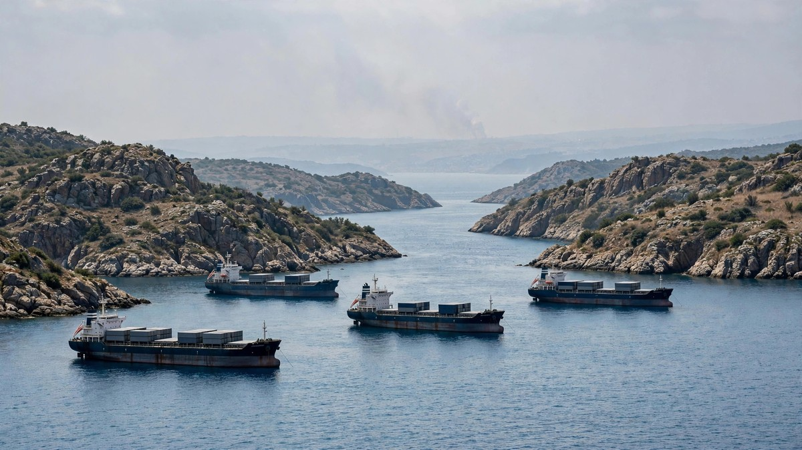

US Strike Reported on Iran's Qeshm Island as Talks Show Progress
The United States was reported to have struck Iran's Qeshm Island on Monday, as US officials said talks with Tehran had made progress toward a possible deal.

Sources: Reuters, The Times of Israel
The United States struck Iran's Qeshm Island on Monday, the Wall Street Journal reported, citing US officials. The report followed several explosions on the island, which sits at the Strait of Hormuz, according to Iranian state media outlet IRNA.
Read More
The Journal said the attack was the latest in a series of limited strikes by Washington in recent weeks. It said the strikes were kept smaller in scale and secret, so they would not signal an intent to resume a major military campaign against Iran. The US Central Command did not immediately respond to a request for comment, and Iranian authorities had not confirmed the cause of the explosions.
On the same day, President Donald Trump said a deal with Tehran could happen and answered no when reporters asked if he was considering striking Iran after Tuesday's midterm elections. Vice President JD Vance said Washington had held a number of good conversations with Iran and that he and Trump felt pretty good about the prospects for a negotiated settlement.
Vance said the talks had certainly made some progress and that work would continue. He said the United States had not given Iran a deadline, and that its main concern was a firm and verifiable commitment that Iran would not rebuild its nuclear program. Iran's Foreign Minister Abbas Araghchi said talks through mediators were intensive, with Qatar and Pakistan playing an active mediating role.
Tehran said it was ready to reopen the Strait of Hormuz within two days if Washington agreed to its demands. Those demands included ending the war on all fronts, unfreezing Iranian assets, lifting sanctions on oil sales, and ending the counter-blockade of Iranian ports. Oil prices fell by more than 8 percent on Monday as markets reacted to signs of progress in the talks, according to Gulf News.
What People Say
Right before the election 😆 what a brilliant move
Iran is prepared responding it and it wouldn’t be an easy one!
Here we go again. What series we at now? I've lost track
You strike on someone else's territory and call it self defence?
The name attack changes to Defence.